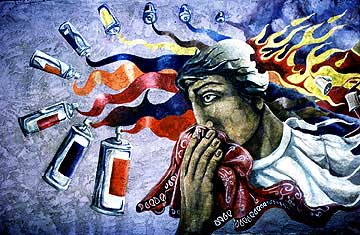

astv@archaeology.monterey.edu
All Text and Photographs on this Web Site are Copyrighted
by Ruben G. Mendoza, 1998


Photo of Chicano community mural in Phoenix, Arizona. Photo by
Ruben G. Mendoza, 1987.
All Text and Photographs on this Web Site are Copyrighted
by Ruben G. Mendoza, 1998